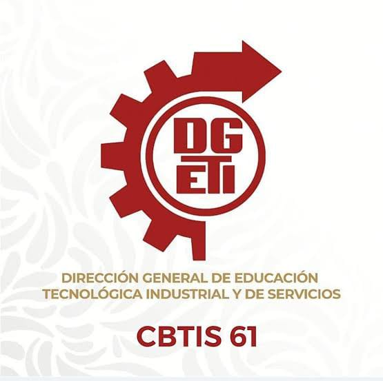

Centro de Bachillerato Tecnologico industrial y de servicos No.61

Actividad 2: "Lo que somos: memoria, identidad y cultura colectiva"
Materia:
Formación Socioemocional V
Docente:
María Isabel Veronica Torres Arevalo
Integrantes del equipo:
Ximena Guadalupe Gomez Valencia
Alisson Romero Arellano
Maria Fernanda Flores Flores
Matias Bautista Leon
Jaime Fernandez Morales
Proposito de la actividad
Los estudiantes reconocen cómo sus recuerdos, experiencias, símbolos, tradiciones, personas, lugares y prácticas culturales
contribuyen a construir su identidad personal y, al mismo tiempo, forman parte de una identidad colectiva.